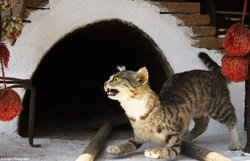

Casa Memorială Ion Creangă
Casa memorială Ion Creangă din Humulești este un muzeu memorial înființat în casa în care s-a născut și a copilărit povestitorul român Ion Creangă (1837-1889) în satul Humulești (astăzi suburbie a orașului Târgu Neamț) din județul Neamț. Datarea casei după cum se indică în LMI este 1833, ea fiind situată pe strada Ion Creangă nr. 8. Ion Creangă a locuit aici permanent de la naștere până în 1846, apoi cu întreruperi până în 1855. Casa memorială-muzeu se află pe Lista Monumentelor Istorice din județul Neamț din anul 2004, având codul NT-IV-m-A-10763.
Construcția este formată din două încăperi micuțe și o tindă. Atracța turistică deține o valoroasă expoziție permanentă, reorganizată tematic după 1989, ce cuprinde documente de arhivă, scrisori, cărți poștale cu autograf, fotocopii ale manuscriselor, fotografii și 14 lucrări de grafică. Lângă muzeu se găsește Parcul tematic „Ion Creangă”, un loc în care vizitatorii se pot întâlni cu personaje îndrăgite din poveștile pentru copii scrise de Ion Creangă.
Istoric
Casa memorială Ion Creangă a fost construită între anii 1830-1831 de către Petre Ciubotariu (conform LMI datarea este 1833[5]), bunicul povestitorului. Acesta a dăruit-o fiului său Ștefan, care în 1835 s-a căsătorit cu Smaranda, fiica lui David Creangă din Pipirig. Ion Creangă a locuit aici permanent de la naștere până în 1846, apoi cu întreruperi până în 1855,[7] când a plecat spre Iași, la Seminarul de la Socola. După moartea lui Ștefan a Petrii și a Smarandei, casa a fost moștenită de fiica lor cea mai mică, Ileana. Ulterior, aceasta, neavând copii, a donat-o nepoatei sale, Sofia, fiica Mariei, o altă soră a lui Creangă. Construcția a fost restaurată în 1937 prin grija istoricului Nicolae Iorga. În 1944 Sofia Grigoriu, născută Creangă, donează casa Asociației Învățătorilor din România. Casa a fost în continuare îngrijită de doi dintre copiii Sofiei, Zahei și Antonică Grigoriu și a funcționat neoficial ca muzeu până la 1951. Atunci, la inițiativa lui Zahei, a avut loc deschiderea propriu-zisă a actualului muzeu memorial. Cele mai importante reparații (restaurări s-au mai realizat în 1960 și 1988) au avut loc în 1975, când a fost refăcut acoperișul și s-a înlocuit tavanul.
Casa memorială Ion Creangă din Humulești a devenit în scurt timp, unul dintre cele mai vizitate muzee memoriale din județul Neamț. În prezent, casa memorială este unul dintre cele mai vizitate muzee din țară, trecându-i pragul anual mai mult de 40.000 de turiști români și străini. În fiecare an, casa patronează Manifestarile „Zilele Creangă”, precum și activități culturale: seri muzeale, expuneri cu temă, conferințe, simpozioane organizate la sediul unității, la sediul Fundației Culturale „Ion Creangă” din Târgu-Neamț sau la școlile din localitate.
Imagini de la Casa meorială Ion Creangă - Humulești
Descriere
„Nu știu alții cum sunt, dar eu, când mă gândesc la locul nașterii mele, la casa părintească din Humulești, la stâlpul hornului unde lega mama o șfară cu motocei la capăt, de crăpau mâțele jucându-se cu ei, la prichiciul vetrei cel humuit, de care mă țineam când începusem a merge copăcel, la cuptorul pe care mă ascundeam, când ne jucam noi, băieții, de-a mijoarca, și la alte jocuri și jucării pline de hazul și farmecul copilăresc, parcă-mi saltă și acum inima de bucurie!”- Ion Creangă
Casa are un acoperiș larg de draniță sub care se află pereții durați din bârne groase peste care s-a așternut un strat de lutuială.[12] Interiorul este format din două încăperi micuțe și o tindă.[13] Intrarea scundă este adăpostită de ploile repezi printr-o prispă lată de câteva palme, iar în spatele casei un acoperământ de scânduri cu pantă repede protejează mai multe obiecte gospodărești și unelte agricole cu certă valoare etnografică.
În prima încăpere, care este cea mai mare și fiind camera în care locuia familia se află covata pentru copilul mic, hainele de sărbătoare așezate pe culmi și lada de zestre a mamei Smaranda. În dreapta de cum intrăm se observă lavița în jurul căreia avea loc iarna șezătoarea. În mijloc sunt așezate pentru a putea fi văzute, uneltele de țesut ale mamei, iar pe o măsuță se pot vedea ceaslovul (prima carte după care a învățat să citească) și bustul său. În tindă se pot observa foarte multe panouri cu date despre scriitor, iar în camera următoare, adică în cămară, se afla intrarea în pod unde Nică a ascuns pupăza din tei.
Atracța turistică deține o valoroasă expoziție permanentă, reorganizată tematic după 1989, ce cuprinde documente de arhivă, scrisori, cărți poștale cu autograf, fotocopii ale manuscriselor, fotografii și 14 lucrări de grafică, realizate de plasticianul Eugen Taru pentru ilustrarea ediției din 1949 a Amintirilor din copilărie.Persoane implicate în organizarea expoziției tematice a muzeului și în colecționarea obiectelor etnografice necesare organizării expoziției au fost: Z. Grigoriu (descendent al povestitorului) și preotul Cosma (preotul satului Humulești).
Accesul către muzeu este reprezentat de DN15C. Această rută face legătura între Târgu Neamț și reședința de județ, Piatra Neamț.
{kind=link}